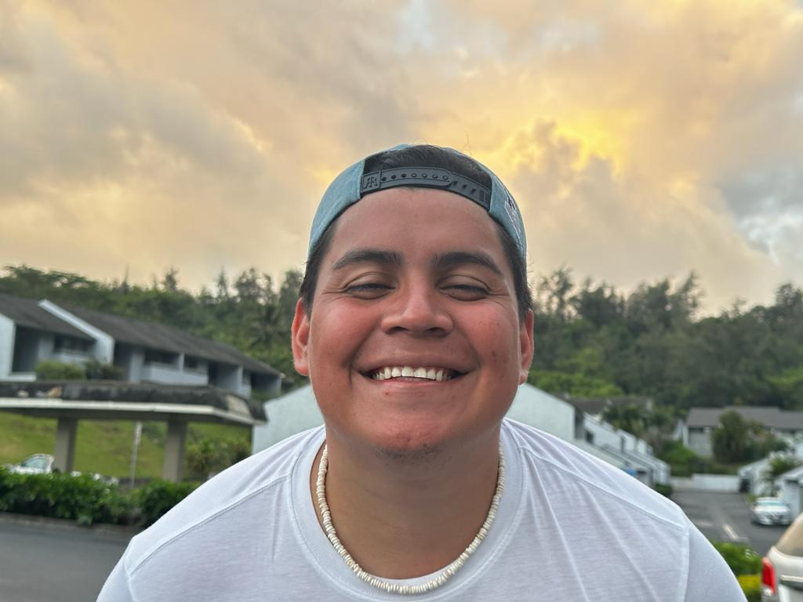

Gerson Isaac Erazo Vasquez | WDD 130
Hello everyone! I'm Gerson Isaac Erazo Vásquez, originally from El Salvador, currently residing in Salt Lake City, Utah. My journey led me to pursue Software Development, a passion I discovered during high school in my home country.In June 2022, I celebrated my wedding, and this 2024, I'm about to reach my two-year anniversary with my wife. Although we don't have children yet, we are excited about the future and starting a family.
In addition to my studies and family life, I am an active member of The Church of Jesus Christ of Latter-day Saints. Before settling in Utah, I had the privilege of serving on a mission in the Mexico Querétaro Mission. It was an incredible experience, full of challenges, but entirely worthwhile. So, in summary, my passion for software development, my commitment to marriage, my desire to start a family, and my connection to the Church have shaped my journey. I am excited about what the future holds in this new chapter of my life here in Salt Lake City.